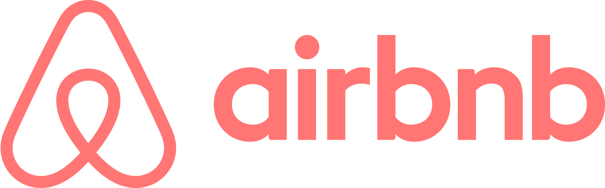

Manny Lopez
Portfolio page
Projects
chartMaker
It takes a really long time to create a table with different colored-cells in Confluence. With this tool, it's as simple as clicking the color you want.
Languages used
HTML
CSS
Javascript
colorReplace
The default Confluence theme only has 5 colors. This tool automatically takes these colors are replaces it with more vibrant ones.
Languages used
HTML
CSS
Javascript
Job experience

Content Editor
March 2018 – Present
- Work as part of a global team to write workflow documentation and related customer response macros
- Managed the migration of the entire knowledge base from Zendesk to Confluence
- Code JavaScript tools to edit HTML code and run queries using SQL
Support Engineer
August 2015 – May 2016
- Responsible for support escalations, triaging, fixing bugs, and implementing product enhancements
- Wrote JavaScript examples and documentation
- Represented Mapbox at tech conferences and meetups and helped drive adoption of Open Source
Support Lead
June 2013 – August 2015
- Initiated and led projects that resulted in a 97% decrease in ticket volume and time savings equivalent to 2 full-time employees
- Created help content, wrote FAQs, email campaigns, and instructional guides for iOS and Android, decreasing support inquiries by 18%
- Designed and developed the Startup Program website, application process, and Salesforce integration
Facebook Pages Operations
May 2011 – January 2013
- Founding member of Pages Operations and grew the team from 4 to 12 members
- Built the support model that decreased total response time from 3 days to 8 hours; currently being used in North America, Latin America, EMEA, and APAC regions
- Crafted and amended global Pages policy that affected the 70 million + Pages on Facebook